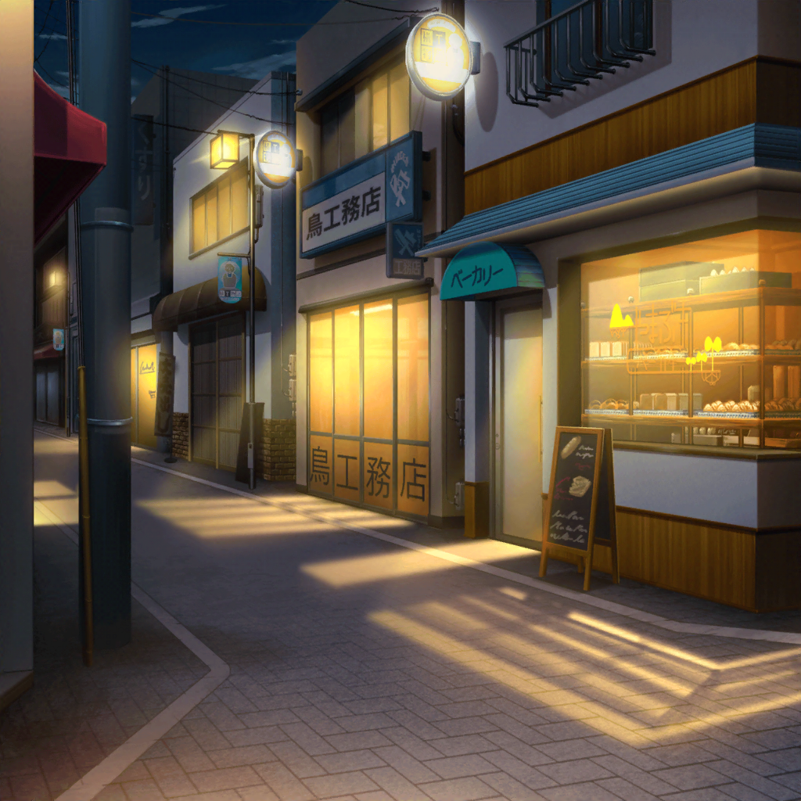

モカ
ふ～……。
モカちゃん、今日も練習お疲れ様～
モカ
ライブ本番を想定して、
衣装を着て練習したけど、
もうバッチリだね～
モカ
これはご褒美に、
自分にパンを買ってあげないと～
モカ
…………
モカ
……つぐー、ま～だ～？
いつまで一人で喋ってればい～の～？
遅いよ～
つぐみ
ご、ごめんねモカちゃん！
今出るからっ！
つぐみ
お、おまたせ！
モカ
おー……
つぐみ
ど、どうしたの、モカちゃん？
モカ
つぐ、衣装のまま帰るなんてやる気に満ち溢れてるね～。
ツグりまくりってかんじ？
つぐみ
えっ……あっ、ほ、ほんとだ！
衣装を着て、練習してたの忘れてたっ！？
ごめんっ、すぐ着替えてくるから……！
モカ
えー、でも早くしないとパン屋しまっちゃうし。
そのまま帰ってもヘーキだって
つぐみ
で、でも……！
モカ
いーからいーから。
ほらほら行くよー
つぐみ
え、ちょっ……
待ってよモカちゃん！

商店街
モカ
ふ～ふ～ん♪ ふふふ～～～ん♪
パンを食べよう～今日も明日も～パン～♪
つぐみ
うう、やっぱりこの衣装、慣れないよ……
恥ずかしい……
モカ
恥ずかしがることないって。
よく似合ってるよー？
つぐみ
……そんな、私にはまだ似合ってないよ
モカ
……あれ？
もしかしてその衣装、実は嫌とか？
つぐみ
え……あ、そうじゃないっ！
全然、嫌なんかじゃないよ！
つぐみ
似合ってないっていうのは……その……
つぐみ
まだ、私がこの衣装に見合うまで成長できてない……
そういう意味なの……
つぐみ
この衣装のことは、
みんなが選んでくれたものだし、
とっても気に入ってるよ
つぐみ
問題は、中身……
私自身っていうか……
つぐみ
この衣装に見劣りしないように、
もっと演奏も上手になりたいし、
メンバーとしてちゃんとやらなきゃって思うんだ
つぐみ
そのためにも、
もっともっと練習しなくちゃ……
モカ
……ふふ、ふふふっ
つぐみ
ど、どうしたの？
モカ
いやさー、
やっぱりつぐはつぐだなーって思って
つぐみ
そ、そうかな……！？
モカ
じゃあ、仕方ないから、
つぐが『この衣装に見合うまで成長できた！』って思うまで
これからちょくちょく練習付き合ってあげようかな～
つぐみ
ほ、ほんと！？
ありがとうモカちゃん！
モカ
……って、誰かが言ってたよ～
つぐみ
ええっ～！？
モカ
ふふ、
ま～、気楽にいこーって
モカ
とりあえず今は、パン屋に急げ～
ほら、つぐ、早く早く～
つぐみ
あっ、待ってよ、モカちゃ～ん！